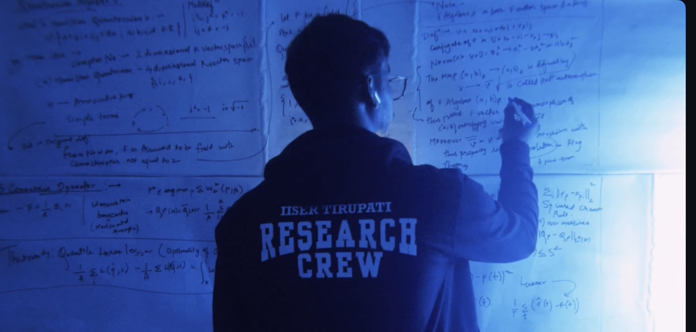

MILIND
SAHU_
Mathematics · Computing · Energy Systems

FIELD NOTES 01 / 03 Proofs in progress_01 About
I'm a BS-MS Mathematics student at IISER Tirupati (Indian Institute of Science Education and Research, an autonomous research institute of the Govt. of India), working at the intersection of mathematical modeling, optimization theory, and computational methods applied to real-world systems.
My research experience includes working as a Remote Research Intern at the University of Amsterdam, a Summer Research Fellow at IIT Palakkad, and a Research Intern at IIIT Kottayam. I have also published two papers: on arbitrage-free GP interpolation of implied volatility surfaces, and a policy and ML framework for civic energy disaggregation.
Through my research identity AXL — Axiom Labs, I also build applied systems — from NILM-based energy disaggregation to proof-theoretic waste traceability — and compete in national hackathons at IITs and IISERs, placing in the top ranks against thousands of participants.
IISER Tirupati — BS–MS Dual Degree, Major: Mathematics · 2025–Present (Expected 2030)
Coursework: Real Analysis, Linear Algebra, Probability Theory, Convex Optimization, Stochastic Processes, Time-Series Analysis
Competitive entry: AIR 780 — NEST (National Entrance Screening Test) · AIR 3714 — IAT (IISER Aptitude Test)
Outside research — I shoot and edit. Mostly street, campus life, and the quiet moments between things. @its_milindsahu →
03 Research Galaxy
Drag to rotate · Scroll to zoom · Hover planets


05 Research Identity
Axiom Labs is my independent computational research identity — building at the intersection of rigorous mathematics and deployable systems. Every project starts from axioms, not assumptions.
Explore AXL →